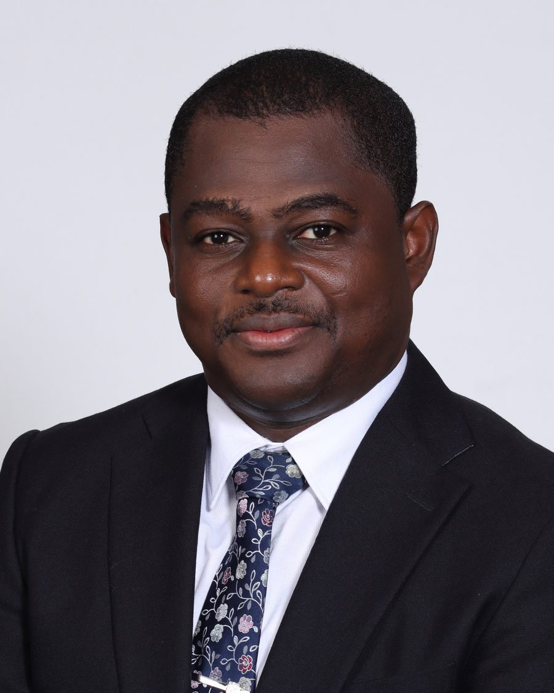

Making mental health assessment work across cultures, not despite them.
I am a consultant child and adolescent psychiatrist and researcher based in Kumasi, Ghana, where I helped transform one of Ghana's first multidisciplinary child and adolescent mental health (CAMH) clinics. My research spans psychometrics, psychiatric genetics, CAMH epidemiology, and computational methods, with a focus on closing the evidence gap for African-ancestry and low-resource populations. I also have a growing interest in applied AI in mental health research.
Current Focus
selected workTeacher-Delivered Group CBT for Adolescent Depression in West Africa
A multi-country consortium project to adapt, implement, and evaluate a teacher-delivered, group-based cognitive behavioural therapy programme for depressive symptoms among adolescents across five West African countries, including Nigeria, Ghana, and Sierra Leone. The consortium has won a planning grant for the preliminary phase, with an invitation-only opportunity to bid for the five-year main implementation grant.
Genetic Architecture of Mood Disorders in African-Ancestry Populations
A scoping review mapping the genetic architecture and polygenic predictability of mood disorders in African-ancestry populations (manuscript in peer review), now extended into a GWAS analysis using the All of Us dataset and a Mendelian randomization study of obesity, sex, and depression.